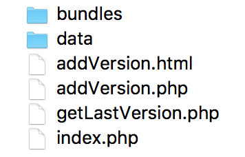

React Native iOS 热更新
用PHP写了一个简单的热更新上传版本管理系统。

采用文本读写JSON格式的内容。
备注
这个热更新没有严格的逻辑流程，只是实现了功能。后续再来搞吧。
操作
在 项目/ios 路径下创建存放生成文件的文件夹：bundle。
通过命令生成iOS 的资源包：
react-native bundle --entry-file index.js --bundle-output ./ios/bundle/index.ios.jsbundle --platform ios --assets-dest ./ios/bundle --dev false
将 bundle文件夹下的文件全部压缩成一个包，名为：index.ios.jsbundle.zip。（这个名字，自己看需求改动吧。）
PS：bundle文件夹下的资源最好先清一下，免得重复打包。
然后把资源放到服务器上就可以了。
代码
AppDelegate.h
#import <UIKit/UIKit.h>
@interface AppDelegate : UIResponder <UIApplicationDelegate>
@property (nonatomic, strong) UIWindow *window;
@property(nonatomic,strong) NSDictionary* launchOptions;
@end
AppDelegate.m
#import "AppDelegate.h"
#import <React/RCTBundleURLProvider.h>
#import <React/RCTRootView.h>
#import "UpdateDataLoader.h"
@implementation AppDelegate
- (BOOL)application:(UIApplication *)application didFinishLaunchingWithOptions:(NSDictionary *)launchOptions
{
self.launchOptions = launchOptions;
[[NSNotificationCenter defaultCenter] addObserver:self selector:@selector(aaaasasdasdasda) name:@"系统重新加载内容" object:nil];
[[UpdateDataLoader sharedInstance] createPath];
[[UpdateDataLoader sharedInstance] getAppVersion];
[self aaaasasdasdasda];
return YES;
}
- (void) aaaasasdasdasda {
//检查更新并下载，有更新则直接下载，无则保持默认配置
//定义加载bundle的URL
NSURL *jsCodeLocation;
NSString* iOSBundlePath = [[UpdateDataLoader sharedInstance] iOSFileBundlePath];
if ([[NSFileManager defaultManager] fileExistsAtPath:iOSBundlePath]) {
jsCodeLocation = [NSURL URLWithString:[iOSBundlePath stringByAppendingPathComponent:@"index.ios.jsbundle"]];
if ([[NSFileManager defaultManager] fileExistsAtPath:jsCodeLocation.absoluteString] == NO) {
jsCodeLocation = [[RCTBundleURLProvider sharedSettings] jsBundleURLForBundleRoot:@"index" fallbackResource:nil];
}
} else {
jsCodeLocation = [[RCTBundleURLProvider sharedSettings] jsBundleURLForBundleRoot:@"index" fallbackResource:nil];
}
RCTRootView *rootView = [[RCTRootView alloc] initWithBundleURL:jsCodeLocation
moduleName:@"testhot"
initialProperties:nil
launchOptions:self.launchOptions];
rootView.backgroundColor = [[UIColor alloc] initWithRed:1.0f green:1.0f blue:1.0f alpha:1];
self.window = [[UIWindow alloc] initWithFrame:[UIScreen mainScreen].bounds];
UIViewController *rootViewController = [UIViewController new];
rootViewController.view = rootView;
self.window.rootViewController = rootViewController;
[self.window makeKeyAndVisible];
}
@end
DownloadTool.h
#import <Foundation/Foundation.h>
#import <UIKit/UIKit.h>
@interface DownloadTool : NSObject
@property (nonatomic, strong) NSString *zipPath;
@property (nonatomic, strong) UIView* view;
+ (DownloadTool *) defaultDownloadTool;
//根据url下载相关文件
- (void) downloadWithUrl:(NSString*)url;
//解压压缩包
- (BOOL) unZip;
//删除压缩包
- (void) deleteZip;
@end
DownloadTool.m
#import "DownloadTool.h"
#import "SSZipArchive.h"
#import "AFURLSessionManager.h"
#import "UpdateDataLoader.h"
@implementation DownloadTool
+ (DownloadTool *) defaultDownloadTool {
static DownloadTool *sharedInstance = nil;
static dispatch_once_t onceToken;
dispatch_once(&onceToken, ^{
sharedInstance = [[DownloadTool alloc] init];
});
return sharedInstance;
}
- (void) downloadWithUrl:(NSString*)url {
// NSLog(@"下载链接为：%@",url);
//根据url下载相关文件
NSURLSessionConfiguration *configuration = [NSURLSessionConfiguration defaultSessionConfiguration];
AFURLSessionManager *manager = [[AFURLSessionManager alloc] initWithSessionConfiguration:configuration];
NSURL *URL = [NSURL URLWithString:url];
NSURLRequest *request = [NSURLRequest requestWithURL:URL];
NSURLSessionDownloadTask *downloadTask = [manager downloadTaskWithRequest:request progress:^(NSProgress * _Nonnull downloadProgress) {
//获取下载进度
NSLog(@"Progress is %f", downloadProgress.fractionCompleted);
} destination:^NSURL *(NSURL *targetPath, NSURLResponse *response) {
//有返回值的block，返回文件存储路径
NSURL *documentsDirectoryURL = [[NSFileManager defaultManager] URLForDirectory:NSDocumentDirectory inDomain:NSUserDomainMask appropriateForURL:nil create:NO error:nil];
NSURL* targetPathUrl = [documentsDirectoryURL URLByAppendingPathComponent:@"IOSBundle"];
return [targetPathUrl URLByAppendingPathComponent:[response suggestedFilename]];
} completionHandler:^(NSURLResponse *response, NSURL *filePath, NSError *error) {
if(error){
//下载出现错误
NSLog(@"%@",error);
} else {
// [self showPromptWithStr:@"更新完毕。请重新启动******！"];
//下载成功
NSLog(@"File downloaded to: %@", filePath);
self.zipPath = [[filePath absoluteString] substringFromIndex:7];
//下载成功后更新本地存储信息
NSDictionary*infoDic=@{@"bundleVersion":@3,@"downloadUrl":url};
[UpdateDataLoader sharedInstance].versionInfo=infoDic;
[[UpdateDataLoader sharedInstance] writeAppVersionInfoWithDictiony:[UpdateDataLoader sharedInstance].versionInfo];
//解压并删除压缩包
if ([self unZip]) {
[self deleteZip];
}
[[NSNotificationCenter defaultCenter] postNotificationName:@"系统重新加载内容" object:nil userInfo:nil];
}
}];
[downloadTask resume];
}
//解压压缩包
- (BOOL) unZip {
if (self.zipPath == nil) {
return NO;
}
//检查Document里有没有bundle文件夹
NSString* path = [NSSearchPathForDirectoriesInDomains(NSDocumentDirectory, NSUserDomainMask, YES) objectAtIndex:0];
NSString* bundlePath = [path stringByAppendingPathComponent:@"kiOSfileSetName"];
BOOL isDir;
//如果有，则删除后解压，如果没有则直接解压
if ([[NSFileManager defaultManager] fileExistsAtPath:bundlePath isDirectory:&isDir]&&isDir) {
[[NSFileManager defaultManager] removeItemAtPath:bundlePath error:nil];
}
NSString *zipPath = self.zipPath;
NSString *destinationPath = [[NSSearchPathForDirectoriesInDomains(NSDocumentDirectory, NSUserDomainMask, YES) objectAtIndex:0]stringByAppendingString:@"/IOSBundle"];
BOOL success = [SSZipArchive unzipFileAtPath:zipPath
toDestination:destinationPath];
return success;
}
//删除压缩包
- (void) deleteZip {
NSError* error = nil;
[[NSFileManager defaultManager] removeItemAtPath:self.zipPath error:&error];
}
@end
UpdateDataLoader.h
#import <Foundation/Foundation.h>
@interface UpdateDataLoader : NSObject
@property (nonatomic, strong) NSDictionary* versionInfo;
+ (UpdateDataLoader *) sharedInstance;
//创建bundle路径
-(void)createPath;
//获取版本信息
-(void)getAppVersion;
-(void)writeAppVersionInfoWithDictiony:(NSDictionary*)info;
-(NSString*)iOSFileBundlePath;
@end
UpdateDataLoader.m
#import "UpdateDataLoader.h"
#import "DownloadTool.h"
@implementation UpdateDataLoader
+ (UpdateDataLoader *) sharedInstance {
static UpdateDataLoader *sharedInstance = nil;
static dispatch_once_t onceToken;
dispatch_once(&onceToken, ^{
sharedInstance = [[UpdateDataLoader alloc] init];
});
return sharedInstance;
}
//创建bundle路径
- (void) createPath {
if([self getVersionPlistPath]){
return;
}
NSArray *paths = NSSearchPathForDirectoriesInDomains(NSDocumentDirectory,NSUserDomainMask,YES);
NSString *path = [paths lastObject];
NSFileManager *fileManager = [NSFileManager defaultManager];
NSString *directryPath = [path stringByAppendingPathComponent:@"IOSBundle"];
[fileManager createDirectoryAtPath:directryPath withIntermediateDirectories:YES attributes:nil error:nil];
NSString *filePath = [directryPath stringByAppendingPathComponent:@"Version.plist"];
[fileManager createFileAtPath:filePath contents:nil attributes:nil];
}
//获取版本信息
- (void) getAppVersion {
//从服务器上获取版本信息,与本地plist存储的版本进行比较
//假定返回的结果集
/*{
bundleVersion = 2;
downloadUrl = "www.baidu.com";
}*/
//1.获取本地plist文件的版本号 假定为2
NSString* plistPath=[self getVersionPlistPath];
NSMutableDictionary *data = [[NSMutableDictionary alloc] initWithContentsOfFile:plistPath];
NSInteger localV=[data[@"bundleVersion"]integerValue];
localV=2;
//2 服务器版本 假定为3
NSInteger serviceV=3 ;
if(serviceV>localV){
//下载bundle文件 存储在 Doucuments/IOSBundle/下
NSString*url=@"http://193.112.100.126/test/source/rn/ios/index.ios.jsbundle.zip";
[[DownloadTool defaultDownloadTool] downloadWithUrl:url];
}
}
//获取Bundle 路径
- (NSString*) iOSFileBundlePath {
//获取沙盒路径
NSArray* paths = NSSearchPathForDirectoriesInDomains(NSDocumentDirectory, NSUserDomainMask, YES);
NSString* path = [paths objectAtIndex:0];
// NSLog(@"the save version file's path is :%@",path);
//填写文件名
NSString* filePath = [path stringByAppendingPathComponent:@"IOSBundle"];
return filePath;
}
//获取版本信息储存的文件路径
- (NSString*) getVersionPlistPath {
//获取沙盒路径
NSArray* paths = NSSearchPathForDirectoriesInDomains(NSDocumentDirectory, NSUserDomainMask, YES);
NSString* path = [paths lastObject];
// NSLog(@"the save version file's path is :%@",path);
path = [path stringByAppendingPathComponent:@"IOSBundle"];
if ([[NSFileManager defaultManager] fileExistsAtPath:path] == NO) {
[[NSFileManager defaultManager] createDirectoryAtPath:path withIntermediateDirectories:YES attributes:nil error:nil];
}
//填写文件名
NSString* filePath = [path stringByAppendingPathComponent:@"Version.plist"];
// NSLog(@"文件路径为：%@",filePath);
return filePath;
}
//创建或修改版本信息
- (void) writeAppVersionInfoWithDictiony:(NSDictionary*)dictionary {
NSString* filePath = [self getVersionPlistPath];
[dictionary writeToFile:filePath atomically:YES];
}
@end
后续补充
修正版本更新逻辑：
1.APP版本与服务器上的版本进行对比，假如服务器上的版本更高就进行下一步判断，否则使用本APP自带的数据内容。
2.假如本地不存在版本，则下载服务器版本数据，否则进行下一步。
3.服务器的版本与本机服务器的版本对比，假如前者的版本更高则从服务器那里下载新的数据，否则继续使用本地数据。
---2018-09-20